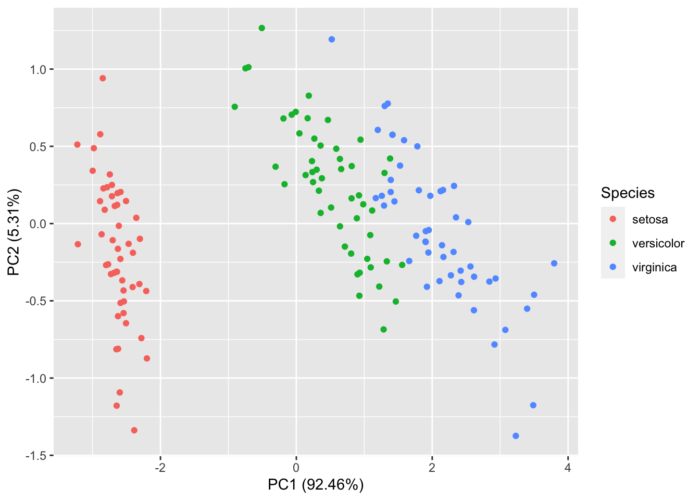

1.1 PCA: an informal introduction
There are two different ways of motivating principal component analysis (PCA), which may in part explain why PCA is so widely used.
The first motivation, and the topic of this section, is to introduce PCA as method for maximizing the variance of the transformed variables \(\boldsymbol y\). We start by choosing \(\boldsymbol u_1\) so that \(y_1=\boldsymbol u_1^\top \boldsymbol x\) has maximum variance. We then choose \(\boldsymbol u_2\) so that \(y_2=\boldsymbol u_2^\top \boldsymbol x\) has maximum variance subject to being uncorrelated with \(y_1\), and so on.
The idea is to produce a set of variables \(y_1, y_2, \ldots, y_r\) that are uncorrelated, but which are most informative about the data. The thinking is that if a variable has large variance it must be informative/important.
The name principal component analysis comes from thinking of this as splitting the data \(\boldsymbol X\) into its most important parts. It therefore won’t surprise you to find that this involves the matrix decompositions we studied in Chapter ??.
Allison Horst (@allison_horst) gave a great illustration of how to think about PCA on Twitter. Imagine you are a whale shark with a wide mouth

and that you’re swimming towards a delicious swarm of krill.

What way should you tilt your shark head in order to eat as many krill as possible? The answer is given by the first principal component of the data!
1.1.1 Notation recap
As before, let \(\boldsymbol x_1,\ldots,\boldsymbol x_n\) be \(p \times 1\) vectors of measurements on \(n\) experimental units and write \[\boldsymbol X=\left( \begin{array}{ccc} - &\boldsymbol x_1^\top&-\\ - &\boldsymbol x_2^\top&-\\ - &..&-\\ - &\boldsymbol x_n^\top&- \end{array}\right) \]
IMPORTANT NOTE:
In this section we will assume that \(\boldsymbol X\) has been column centered so that the mean of each column is \(0\) (i.e., the sample mean of \(\boldsymbol x_1,\ldots,\boldsymbol x_n\) is the zero vector \(\boldsymbol 0\in \mathbb{R}^p\)). If \(\boldsymbol X\) has not been column centered, replace \(\boldsymbol X\) by
\[\boldsymbol H\boldsymbol X\] where \(\boldsymbol H\) is the centering matrix (see ??), or equivalently, replace \(\boldsymbol x_i\) by \(\boldsymbol x_i - \bar{\boldsymbol x}\). It is possible to write out the details of PCA replacing \(\boldsymbol X\) by \(\boldsymbol H\boldsymbol X\) throughout, but this gets messy and obscures the important detail. Most software implementations (and in particular prcomp in R), automatically centre your data for you, and so in practice you don’t need to worry about doing this when using a software package.
The sample covariance matrix for \(\boldsymbol X\) (assuming it has been column centered) is \[\boldsymbol S= \frac{1}{n}\boldsymbol X^\top \boldsymbol X= \frac{1}{n}\sum \boldsymbol x_i\boldsymbol x_i^\top\]
Given some vector \(\boldsymbol u\), the transformed variables \[y_i = \boldsymbol u^\top \boldsymbol x_i\] have
mean \(0\): \[\bar{y}= \frac{1}{n}\sum_{i=1}^n y_i = \frac{1}{n}\sum_{i=1}^n \boldsymbol u^\top \boldsymbol x_i =\frac{1}{n} \boldsymbol u^\top \sum_{i=1}^n \boldsymbol x_i = 0\] as the mean of the \(\boldsymbol x_i\) is \(\boldsymbol 0\).
sample covariance matrix \[\boldsymbol u^\top \boldsymbol S\boldsymbol u\] as \[\frac{1}{n} \sum_{i=1}^n y_i^2 = \frac{1}{n} \sum_{i=1}^n \boldsymbol u^\top \boldsymbol x_i \boldsymbol x_i^\top\boldsymbol u= \frac{1}{n}\boldsymbol u^\top \sum_{i=1}^n \boldsymbol x_i \boldsymbol x_i^\top \boldsymbol u= \boldsymbol u^\top \boldsymbol S\boldsymbol u \]
1.1.2 First principal component
We would like to find the \(\boldsymbol u\) which maximises the sample variance, \(\boldsymbol u^\top \boldsymbol S\boldsymbol u\) over unit vectors \(\boldsymbol u\), i.e., vectors with \(||\boldsymbol u||=1\). Why do we focus on unit vectors? If we don’t, we could make the variance as large as we like, e.g., if we replace \(\boldsymbol u\) by \(10\boldsymbol u\) it would increase the variance by a factor of 100. Thus, we constrain the problem and only consider unit vectors for \(\boldsymbol u\).
We know from Proposition ?? in Section ?? that \(\boldsymbol v_1\), the first eigenvector of \(\boldsymbol S\) (also the first right singular vector of \(\boldsymbol X\)), maximizes \(\boldsymbol u^\top \boldsymbol S\boldsymbol u\) with \[ \max_{\boldsymbol u: ||\boldsymbol u||=1} \boldsymbol u^\top \boldsymbol S\boldsymbol u= \boldsymbol v_1 \boldsymbol S\boldsymbol v_1 =\lambda_1\] where \(\lambda_1\) is the largest eigenvalue of \(\boldsymbol S\).
So the first principal component of \(\boldsymbol X\) is \(\boldsymbol v_1\), and the first transformed variable (sometimes called a principal component score) is \(y_1 = \boldsymbol v_1 ^\top \boldsymbol x\). Applying this to each data point we get \(n\) instances of this new variable \[y_{i1} = \boldsymbol v_1 ^\top \boldsymbol x_i.\]
A note on singular values: We know \(\boldsymbol S= \frac{1}{n}\boldsymbol X^\top\boldsymbol X\) and so the eigenvalues of \(\boldsymbol S\) are the same as the squared singular values of \(\frac{1}{\sqrt{n}} \boldsymbol X\):
\[\sqrt{\lambda_1} = \sigma_1\left(\frac{1}{\sqrt{n}} \boldsymbol X\right)\]
If we scale \(\boldsymbol X\) by a factor \(c\), then the singular values are scaled by the same amount, i.e., \[\sigma_i(c\boldsymbol X)=c\sigma_i(\boldsymbol X)\] and in particular \[ \sigma_i\left(\frac{1}{\sqrt{n}} \boldsymbol X\right) = \frac{1}{\sqrt{n}} \sigma_i(\boldsymbol X)\] We will need to remember this scaling if we use the SVD of \(\boldsymbol X\) to do PCA. Note that scaling \(\boldsymbol X\) does not change the singular vectors/principal components.
1.1.3 Second principal component
\(y_1\) is the transformed variable that has maximum variance. What should we choose to be our next transformed variable, i.e., what \(\boldsymbol u_2\) should we choose for \(y_2 = \boldsymbol u_2^\top \boldsymbol x\)? It makes sense to choose \(y_2\) to be uncorrelated with \(y_1\), as otherwise it contains some of the same information given by \(y_1\). The sample covariance between \(y_1\) and \(\boldsymbol u_2^\top \boldsymbol x\) is \[\begin{align*} s_{y_2y_1} &=\frac{1}{n}\sum_{i=1}^n \boldsymbol u_2^\top \boldsymbol x_i \boldsymbol x_i^\top \boldsymbol v_1\\ &= \boldsymbol u_2^\top \boldsymbol S\boldsymbol v_1\\ & = \lambda_1 \boldsymbol u_2^\top \boldsymbol v_1 \mbox{ as } \boldsymbol v_1 \mbox{ is an eigenvector of } S \end{align*}\] So to make \(y_2\) uncorrelated with \(y_1\) we have to choose \(\boldsymbol u_2\) to be orthogonal to \(\boldsymbol v_1\), i.e., \(\boldsymbol u_2^\top \boldsymbol v_1=0\). So we choose \(\boldsymbol u_2\) to be the solution to the optimization problem
\[\max_{\boldsymbol u} \boldsymbol u^\top \boldsymbol S\boldsymbol u\mbox{ subject to } \boldsymbol u^\top \boldsymbol v_1=0.\] The solution to this problem is to take \(\boldsymbol u_2 = \boldsymbol v_2\), i.e., the second eigenvector of \(\boldsymbol S\) (or second right singular vector of \(\boldsymbol X\)), and then \[\boldsymbol v_2^\top \boldsymbol S\boldsymbol v_2=\lambda_2.\] We’ll prove this result in the next section.
Later principal components
Our first transformed variable is \[y_{i1}= \boldsymbol v_1^\top \boldsymbol x_i\] and our second transformed variable is \[y_{i2}= \boldsymbol v_2^\top \boldsymbol x_i.\] At this point, you can probably guess that the \(j^{th}\) transformed variable is going to be \[y_{ij}= \boldsymbol v_j^\top \boldsymbol x_i.\] where \(\boldsymbol v_j\) is the \(j^{th}\) eigenvector of \(\boldsymbol S\).
- The transformed variables \(y_{i}\) are the principal component scores. \(y_1\) is the first score etc.
- The eigenvectors/right singular vectors are sometimes refered to as the loadings or simply as the principal components.
1.1.4 Geometric interpretation
We think of PCA as projecting the data points \(\boldsymbol x\) onto a subspace \(V\). The basis vectors for this subspace are the eigenvectors of \(\boldsymbol S\), which are the same as the right singular vectors of \(\boldsymbol X\) (the loadings):
\[V=\operatorname{span}\{\boldsymbol v_1, \ldots, \boldsymbol v_r\}.\]
The orthogonal projection matrix (see Section ??) for projecting onto \(V\) is
\[\boldsymbol P_V = \boldsymbol V\boldsymbol V^\top\]
as \(\boldsymbol V^\top \boldsymbol V=\mathbf I\).
The coordinates of the data points projected onto \(V\) (with respect to the basis for \(V\)) are the principal component scores:
\[\boldsymbol y_i= \left(\begin{array}{c}y_{i1}\\\vdots\\y_{ir}\end{array}\right)= \boldsymbol V^\top \boldsymbol x_i\] where \[\boldsymbol V= \left(\begin{array}{ccc} | &&|\\\boldsymbol v_1&\ldots& \boldsymbol v_r\\ | &&|\end{array}\right)\] is the matrix of right singular vectors from the SVD of \(\boldsymbol X\). The transformed variables are
\[\boldsymbol Y= \left( \begin{array}{ccc} - &\boldsymbol y_1^\top&-\\ - &..&-\\ - &\boldsymbol y_n^\top&- \end{array}\right ) = \boldsymbol X\boldsymbol V. \] Substituting the SVD for \(\boldsymbol X= \boldsymbol U\boldsymbol \Sigma\boldsymbol V^\top\) we can see the transformed variable matrix/principal component scores are \[\boldsymbol Y= \boldsymbol U\boldsymbol \Sigma.\]
\(\boldsymbol Y\) is a \(n \times r\) matrix, and so if \(r<p\) we have reduced the dimension of \(\boldsymbol X\), keeping the most important parts of the data
1.1.5 Example
We consider the marks of \(n=10\) students who studied G11PRB and G11STA.
| student | PRB | STA |
|---|---|---|
| 1 | 81 | 75 |
| 2 | 79 | 73 |
| 3 | 66 | 79 |
| 4 | 53 | 55 |
| 5 | 43 | 53 |
| 6 | 59 | 49 |
| 7 | 62 | 72 |
| 8 | 79 | 92 |
| 9 | 49 | 58 |
| 10 | 55 | 56 |
These data haven’t been column centered, so let’s do that in R. You can do it using the centering matrix as previously, but here is a different approach:
secondyr <- data.frame(
student = 1:10,
PRB=c(81 , 79 , 66 , 53 , 43 , 59 , 62 , 79 , 49 , 55),
STA =c(75 , 73 , 79 , 55 , 53 , 49 , 72 , 92 , 58 , 56)
)
xbar <- colMeans(secondyr[,2:3]) #only columns 2 and 3 are data
X <- as.matrix(sweep(secondyr[,2:3], 2, xbar) )| PRB | STA |
|---|---|
| 18.4 | 8.8 |
| 16.4 | 6.8 |
| 3.4 | 12.8 |
| -9.6 | -11.2 |
| -19.6 | -13.2 |
| -3.6 | -17.2 |
| -0.6 | 5.8 |
| 16.4 | 25.8 |
| -13.6 | -8.2 |
| -7.6 | -10.2 |
The sample covariance matrix can be computed in two ways:
## PRB STA
## PRB 162.04 135.38
## STA 135.38 175.36## PRB STA
## PRB 162.04 135.38
## STA 135.38 175.36# Remember R uses the unbiased factor 1/(n-1), so the 9/10=(n-1)/n changes this to 1/n
# to match the notesWe can find the singular value decomposition of \(\boldsymbol X\) using R
## $d
## [1] 55.15829 18.20887
##
## $u
## [,1] [,2]
## [1,] -0.34556317 -0.39864295
## [2,] -0.29430029 -0.39482564
## [3,] -0.21057607 0.34946080
## [4,] 0.26707104 -0.04226416
## [5,] 0.41833934 0.27975879
## [6,] 0.27085156 -0.50812066
## [7,] -0.06865802 0.24349429
## [8,] -0.54378479 0.32464825
## [9,] 0.27768146 0.23043980
## [10,] 0.22893893 -0.08394852
##
## $v
## [,1] [,2]
## [1,] -0.6895160 -0.7242705
## [2,] -0.7242705 0.6895160So we can see that the eigenvectors/right singular vectors/loadings are
\[\boldsymbol v_1=\begin{pmatrix} -0.69 \\ -0.724 \end{pmatrix},\qquad \boldsymbol v_2=\begin{pmatrix} -0.724 \\ 0.69 \end{pmatrix}\]
Sometimes the new variables have an obvious interpretation. In this case the first PC gives approximately equal weight to PRB and STA and thus represents some form of negative ‘’average’’ mark. Note that the singular vectors are only determined upto multiplication by \(\pm 1\). In this case, R has chosen \(\boldsymbol v_1\) to have negative entries, but we could multiply \(\boldsymbol v_1\) by \(-1\) so that the first PC was more like the avearge. As it is, a student that has a high mark on PRB and STA will have a low negative value for \(y_1\). The second PC, meanwhile, represents a contrast between PRB and STA. For example, a large positive value for \(y_2\) implies the student did much better on STA than PRB, and a large negative value implies the opposite.
If we plot the data along with the principal components. The two lines, centred on \(\bar{\boldsymbol x}\), are in the direction of the principal components/eigenvectors, and their lengths are \(2 \sqrt{\lambda_j}\), \(j=1,2\). We can see that the first PC is in the direction of greatest variation (shown in red), and that the second PC (shown in green) is orthogonal to the first PC.
We can find the transformed variables by computing either \(\boldsymbol X\boldsymbol V\) or \(\boldsymbol U\boldsymbol \Sigma\)
## [,1] [,2]
## [1,] -19.060674 -7.2588361
## [2,] -16.233101 -7.1893271
## [3,] -11.615016 6.3632849
## [4,] 14.731183 -0.7695824
## [5,] 23.074883 5.0940904
## [6,] 14.939710 -9.2523011
## [7,] -3.787059 4.4337549
## [8,] -29.994240 5.9114764
## [9,] 15.316435 4.1960474
## [10,] 12.627880 -1.5286074## [,1] [,2]
## [1,] -19.060674 -7.2588361
## [2,] -16.233101 -7.1893271
## [3,] -11.615016 6.3632849
## [4,] 14.731183 -0.7695824
## [5,] 23.074883 5.0940904
## [6,] 14.939710 -9.2523011
## [7,] -3.787059 4.4337549
## [8,] -29.994240 5.9114764
## [9,] 15.316435 4.1960474
## [10,] 12.627880 -1.5286074If we plot the PC scores we can see that the variation is now in line with the new coordinate axes:

R also has a built-in function for doing PCA.
pca <- prcomp(secondyr[,2:3]) # prcomp will automatocally remove the column mean
pca$rotation # the loadings## PC1 PC2
## PRB -0.6895160 -0.7242705
## STA -0.7242705 0.6895160## PC1 PC2
## [1,] -19.060674 -7.2588361
## [2,] -16.233101 -7.1893271
## [3,] -11.615016 6.3632849
## [4,] 14.731183 -0.7695824
## [5,] 23.074883 5.0940904
## [6,] 14.939710 -9.2523011
## [7,] -3.787059 4.4337549
## [8,] -29.994240 5.9114764
## [9,] 15.316435 4.1960474
## [10,] 12.627880 -1.5286074```
Note that the new variables have sample mean \(\bar{\boldsymbol y}=\boldsymbol 0\). The sample covariance matrix is a diagonal with entries given by the eigenvalues (see part 4. of Proposition 1.1). Note that there is always some numerical error (so quantities are never 0, and instead are just very small numnbers).
\[ \boldsymbol \Lambda= \text{diag}(\lambda_1,\lambda_2) = \begin{pmatrix} \lambda_1 & 0 \\ 0 & \lambda_2 \end{pmatrix}. \]
## PC1 PC2
## 2.842171e-15 -9.769963e-16## PC1 PC2
## PC1 3.042437e+02 1.974167e-14
## PC2 1.974167e-14 3.315628e+01Finally, note that we did the singular value decomposition for \(\boldsymbol X\) above not \(\frac{1}{\sqrt{10}}\boldsymbol X\), and so we’d need to square and scale the singular values to find the eigenvalues. Let’s check:
## [1] 304.24372 33.15628## [1] 304.24372 33.15628## [1] 304.24372 33.156281.1.6 Example: Iris
In general when using R to do PCA, we don’t need to compute the SVD and then do the projections, as there is an R command prcomp that will do it all for us. The princomp will also do PCA, but is less stable than prcomp, and it is recommended that you use prcomp in preference.
Let’s do PCA on the iris dataset discussed in Chapter ??. The prcomp returns the square root of the eigenvalues (the standard devaiation of the PC scores), and the PC scores.
## [1] 2.0562689 0.4926162 0.2796596 0.1543862## PC1 PC2 PC3 PC4
## [1,] -2.684126 -0.3193972 0.02791483 0.002262437
## [2,] -2.714142 0.1770012 0.21046427 0.099026550
## [3,] -2.888991 0.1449494 -0.01790026 0.019968390
## [4,] -2.745343 0.3182990 -0.03155937 -0.075575817
## [5,] -2.728717 -0.3267545 -0.09007924 -0.061258593
## [6,] -2.280860 -0.7413304 -0.16867766 -0.024200858The PC loadings/eigenvectors can also be accessed, as can the sample mean
## PC1 PC2 PC3 PC4
## Sepal.Length 0.36138659 -0.65658877 0.58202985 0.3154872
## Sepal.Width -0.08452251 -0.73016143 -0.59791083 -0.3197231
## Petal.Length 0.85667061 0.17337266 -0.07623608 -0.4798390
## Petal.Width 0.35828920 0.07548102 -0.54583143 0.7536574## Sepal.Length Sepal.Width Petal.Length Petal.Width
## 5.843333 3.057333 3.758000 1.199333A scree plot can be obtained simply by using the plot command. The summary command also gives useful information about the importance of each PC.
## Importance of components:
## PC1 PC2 PC3 PC4
## Standard deviation 2.0563 0.49262 0.2797 0.15439
## Proportion of Variance 0.9246 0.05307 0.0171 0.00521
## Cumulative Proportion 0.9246 0.97769 0.9948 1.00000To plot the PC scores, you can either manually create a plot or use the ggfortify package. For example, here is a plot of the first two PC scores coloured according to the species of iris.

The ggfortify package provides a nice wrapper for some of this functionality.
